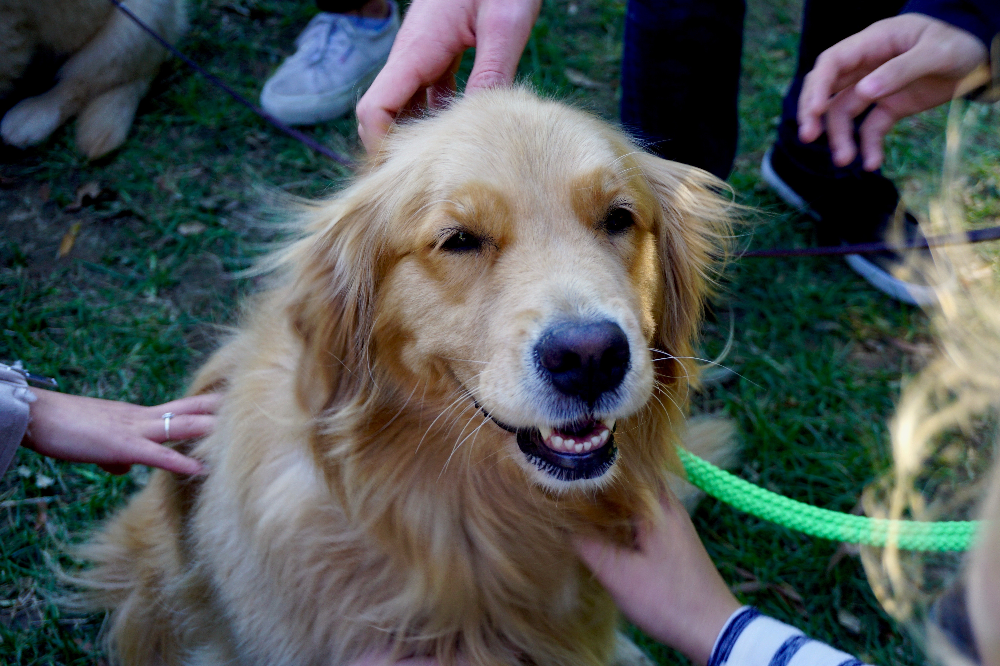

On a mission to keep pets at home and out of shelters by
providing donated pet food and pet care services.
One woman took a dream, developed a vision and with passion and conviction for a cause to keep companion pets at home created a Non-Profit.
EVENTS
ADOPTION FAIR
DECEMBER 16
Shelters and rescue groups come together in one place, with one mission: to find homes for as many pets as possible.
DISPLAY NONE

STRUT YOUR MUTT
JANUARY 12
charity dog walks that brings communities together to raise money and save the lives of homeless pets.


Hurricane Dorian: Hoping for the best, preparing for the worst
Another hurricane is forecast to hit the Southeast and Mid-Atlantic portions of the United States, and Best Friends Animal Society has been in preparation mode to gear up to help. We have worked over the years to grow our network of rescue groups and shelters in our push to end the killing of dogs and cats in shelters.

Accountability is key: Why socially conscious sheltering falls short
Unlike the no-kill philosophy, socially conscious sheltering lacks definable goals, benchmarks of success and accountability. No-kill means that 100% of the animals who can be saved will be saved.